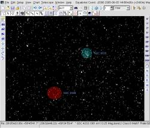

Version 3 alpha 0.0.8
Cette version améliore la convivialité du programme avec de nouveaux menus, barre de bouton et fonctions.
 Calendrier
Calendrier
Le menu Calendrier montre:
- Les heures du crépuscule
- Les éphémérides des planètes, comètes et astéroides.
- Les éclipses de Lune et du Soleil.
La plupart des fonctions sont les mêmes qu'avec la version 2.75.
Seul l'onglet des Comètes et Astéroides sont différent. Pour choisir un objet il faut saisir quelques lettres ou chiffres de son identifiant et presser le bouton “Filter”. Cela rempli la liste avec les correspondances depuis la base de donnée. Il suffit ensuite de sélectionner l'objet dans la liste.
Rappelez-vous que vous pouvez cliquer dans n'importe quelle cellule pour afficher l'évenement correspondant. Par exemple si vous cliquez une ligne d'éphéméride de planète cette planète sera centrée sur la carte. Mais si vous cliquez dans une des colonne Rise, Culmination ou Set alors l'heure utilisée sera celle du lever, culmination ou coucher de la planète.
Utilisez le bouton “Reset Chart” pour revenir aux conditions initiales. Si vous êtes perdu fermer le programme sans sauvegarder la configuration.
La base de donnée par défaut est maintenant SQLite afin de simplifier l'installation.
Une base de donnée personelle est crée la première fois que le programme est lancé.
Avec Windows la dll pour SQLite est inclue et il n'y a rien d'autre a installer.
Avec Linux il faut installer libsqlite.so version 3 de votre distribution, ou utiliser le paquet disponible a la page de téléchargement de Cartes du Ciel.
La base de donnée MySQL est toujours disponible si vous désirez partager la base de donnée entre plusieurs utilisateurs ou ordinateurs.
Choix de la couleur des nébuleuses et de la luminosité de surface.
{kind=link}
Cela permet de mieux distinguer les différents objets sans devoir recourir au dessin par ligne.
Certain boutons ont été réorganisé.
Une nouvelle barre d'affichage permet de rapidement afficher ou cacher certain élements de la carte.
Les boutons de champ de vision utilisent les valeurs configurée.
Toutes les fonction sont maintenant disponible aussi dans le menu.
Une fonction d'aide rudimentaire affiche cette page.
 Utilise Xplanet pour afficher les images des planètes avec Linux
Utilise Xplanet pour afficher les images des planètes avec Linux
Les images des planètes sont maintenant disponible dans la version Linux grâce a un interface avec le programme Xplanet (xplanet.sourceforge.net).
Regardez le fichier skychart/data/planet/xplanet/README pour les informations d'installation.
Autres changement :
- Prévisualisation des images dans la fenetre de configuration.
- Tout les plugins sont maintenant dans le même répertoire.
- Les nom de fichier et répertoire pour le catalogue GSC peuvent être en majuscule ou miniscule (Linux)
- Beaucoup de correction de bug.